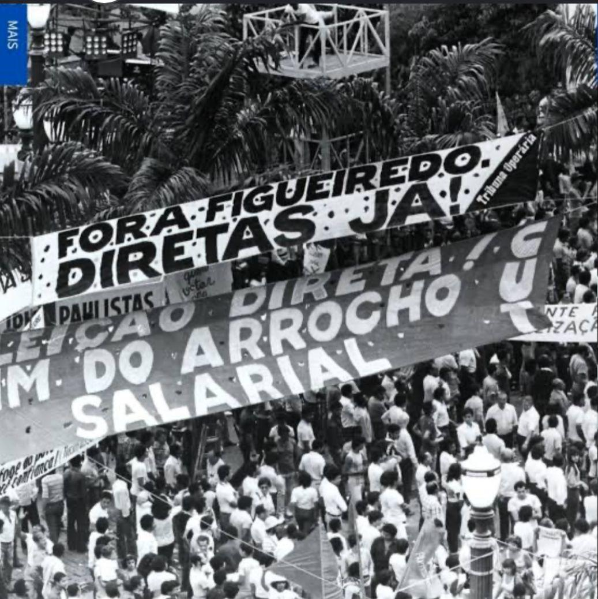
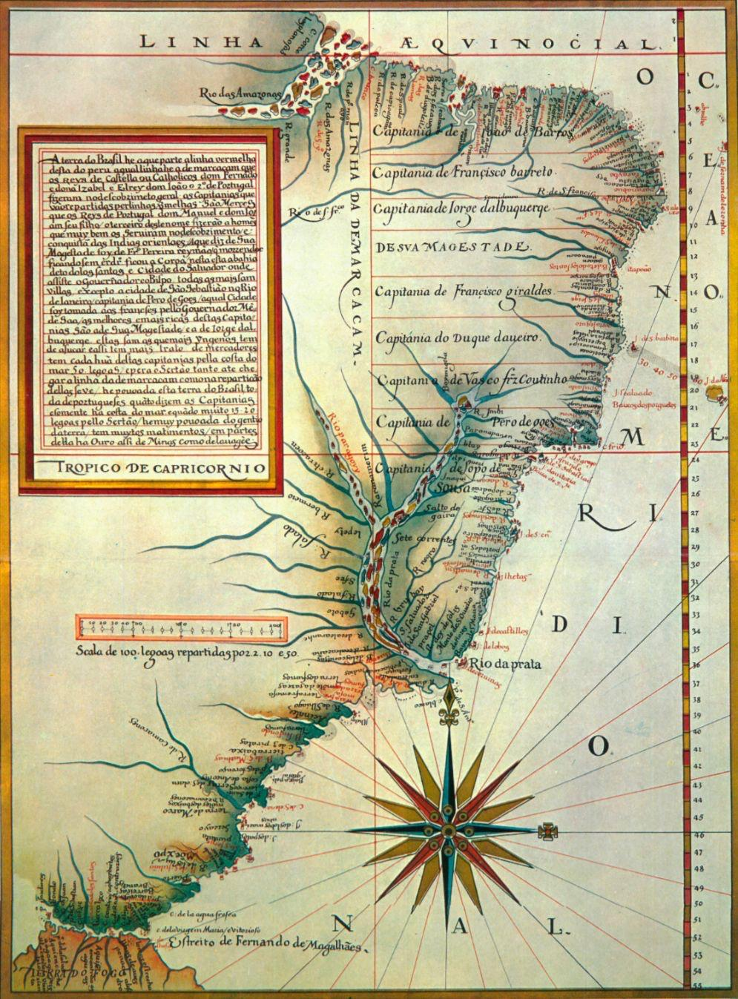
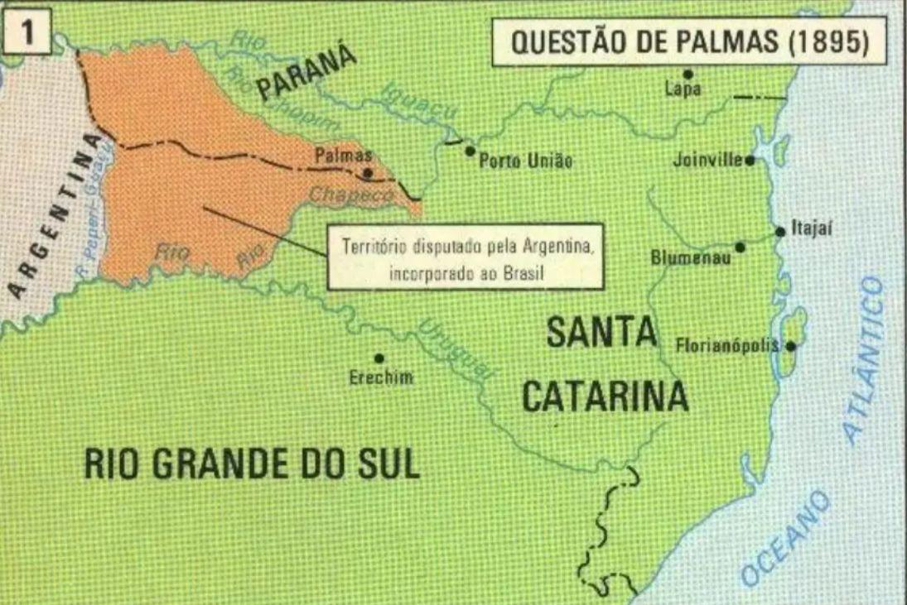
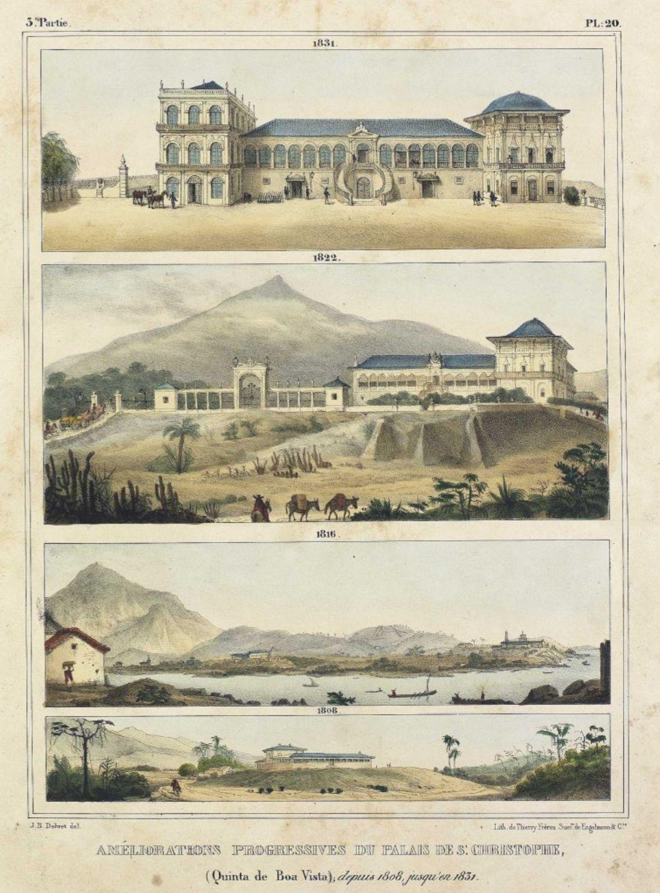
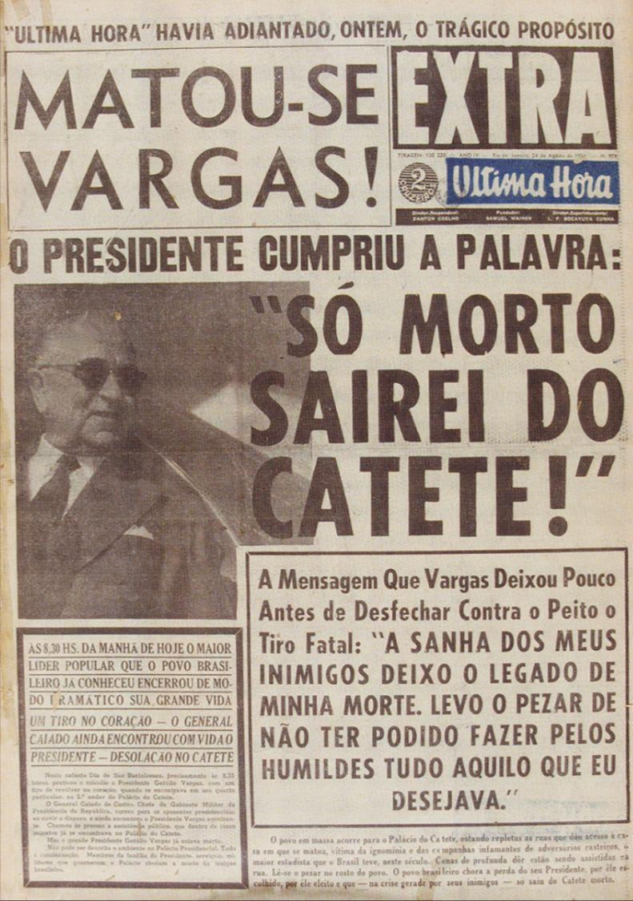
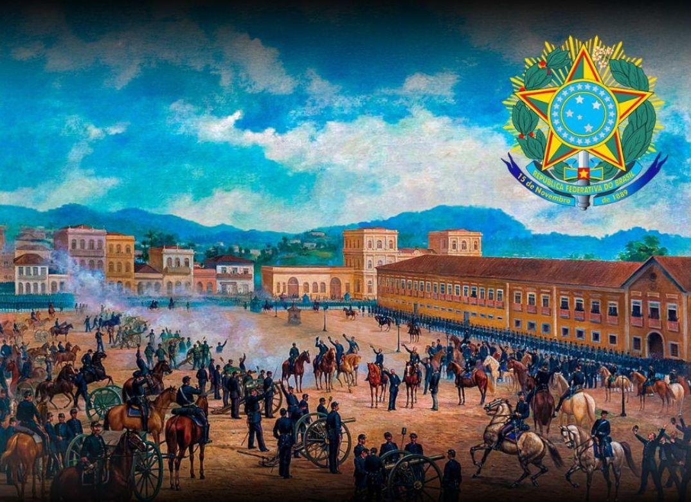
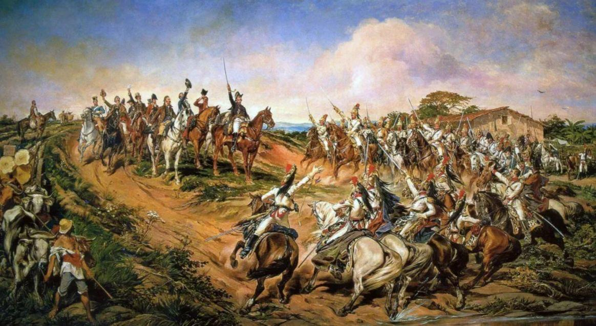

2016
Impeachment da Dilma
Ouvir audiodescrição
Uma linha do tempo visual que percorre a formação do Estado brasileiro através de seus elementos constitutivos — Povo, Território, Governo, Ordem Jurídica, Soberania e Reconhecimento Externo — revelados em doze imagens da nossa história.
O conjunto de cidadãos com vínculos jurídicos e políticos com o Estado, exercendo pressão democrática.

A delimitação do espaço físico do Estado brasileiro, da primeira divisão administrativa à consolidação das fronteiras.


A estrutura administrativa do Estado em sua plenitude — e em sua crise mais extrema.


Os marcos que instauraram e consolidaram o arcabouço legal do Estado brasileiro.

Do ato fundador da nação à afirmação de que suas riquezas pertencem a ela mesma.

A inserção do Brasil na ordem internacional como Estado soberano, reconhecido por outras nações.